| CONSONANTS CHART (Scroll -> for more) | ||||||||||||||||||||
|---|---|---|---|---|---|---|---|---|---|---|---|---|---|---|---|---|---|---|---|---|
| Places | Bilabial | Labio-dental | Dental | Alveolar | Post-alveolar | Retroflex | Palatal | Velar | Glottal | Lateral | ||||||||||
| Manners | Aspirated or voiceless | Voiced | Aspirated or voiceless | Voiced | Aspirated or voiceless | Voiced | Aspirated or voiceless | Voiced | Aspirated or voiceless | Voiced | Aspirated or voiceless | Voiced | Aspirated or voiceless | Voiced | Aspirated or voiceless | Voiced | Aspirated or voiceless | Voiced | Aspirated or voiceless | Voiced |
| Plosive |
SOT: pha TSO:pha VEN: pha"> |
SOT: bha TSO: bha VEN: ba"> |
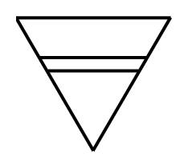 VEN: ṱha"> |
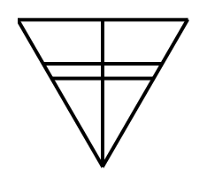 VEN: ḓa"> |
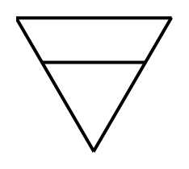 NGU: thaSOT: tha TSO: tha VEN: tha"> |
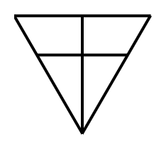 NGU: daSOT: da, la TSO: da VEN: da"> |
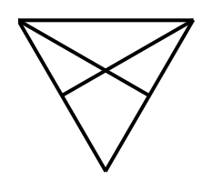 NGU: tyaSOT: tja TSO: — VEN: tya"> |
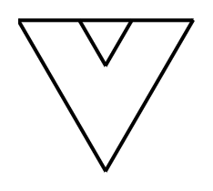 NGU: khaSOT: kha TSO: kha VEN: kha"> |
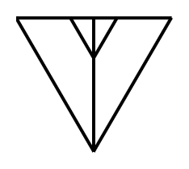 NGU: gaSOT: ga TSO: ga VEN: ga"> |
|||||||||||
| (Ejectives & Implosive) |
SOT: pa TSO: pa VEN: pa"> |
SOT: ba TSO: ba VEN: ba"> |
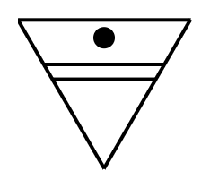 VEN: ṱa"> |
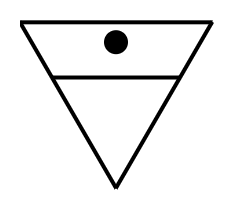 NGU: taSOT: ta TSO: ta VEN: ta"> |
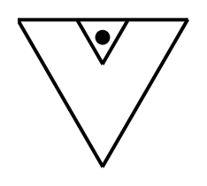 NGU: kaSOT: ka TSO: ka VEN: ka"> |
|||||||||||||||
| Fricative |
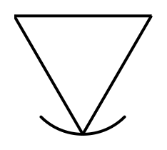 VEN: fha"> |
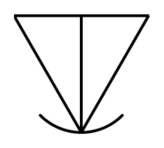 VEN: vha"> |
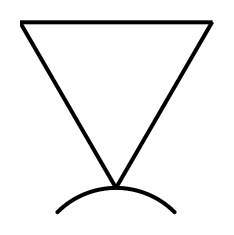 NGU: faSOT: fa TSO: fa VEN: fa"> |
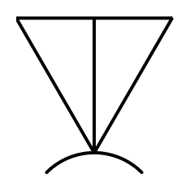 NGU: vaSOT: va TSO: VEN: va"> |
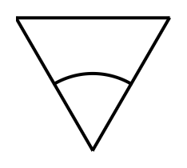 NGU: saSOT: sa TSO: sa VEN: sa"> |
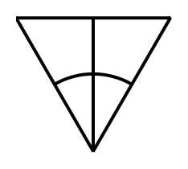 NGU: zaSOT: za TSO: za VEN: za"> |
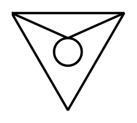 NGU: shaSOT: sha TSO: xa VEN: sha"> |

|
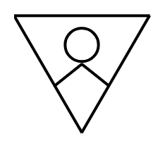 TSO: swa"> |
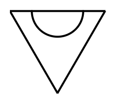 NGU: rha"> |
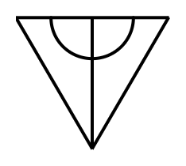 NGU: graSOT: ga"> |
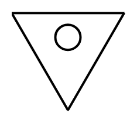 NGU: haSOT: ha TSO: ha VEN: ha"> |
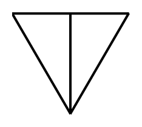 NGU: hhaSOT: ha TSO: hha"> |
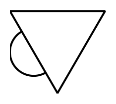 NGU: hlaSOT: hla TSO: hla"> |
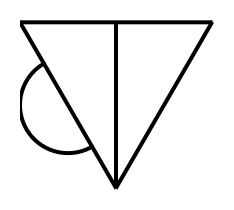 NGU: dla"> |
|||||
| Affricate |
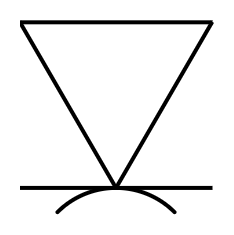 TSO: pfhaVEN: pfa"> |
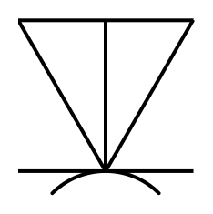 TSO: bvaVEN: bva"> |
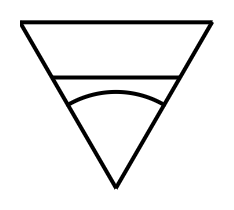 NGU: tsaSOT: tsa TSO: tsa VEN: tsa"> |
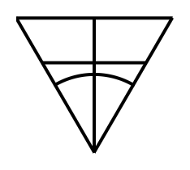 NGU: dzaSOT: dza TSO: dza VEN: dza"> |
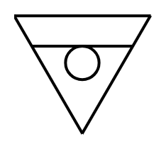 NGU: tshSOT: tš TSO: c VEN: tsh"> |
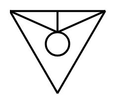 NGU: jaSOT: ja TSO: ja VEN:"> |
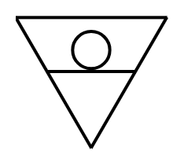 TSO: tswa"> |
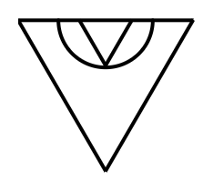 NGU: klaSOT: kha/kga TSO: VEN:"> |
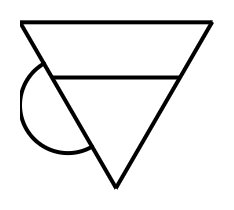 SOT: tlha"> |
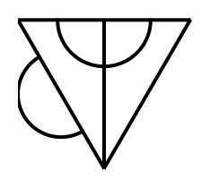 TSO: tlha"> |
||||||||||
| Approximant |
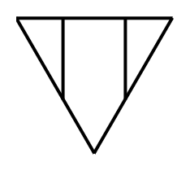 NGU: waSOT: wa TSO: wa VEN: wa"> |
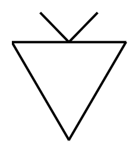 NGU: yaSOT: ya TSO: ya VEN: ya"> |
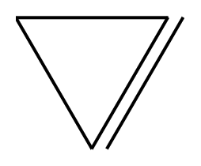 NGU: laSOT: la TSO: la"> |
|||||||||||||||||
| Trill |
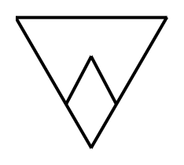 NGU: raSOT: ra TSO: ra VEN: ra"> |
|||||||||||||||||||
| Tap or Flap |
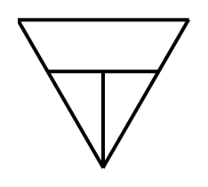 VEN: la"> |
|||||||||||||||||||
| Clicks |

|
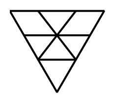 NGU: chaSOT: qha"> |
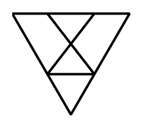 NGU: qha"> |
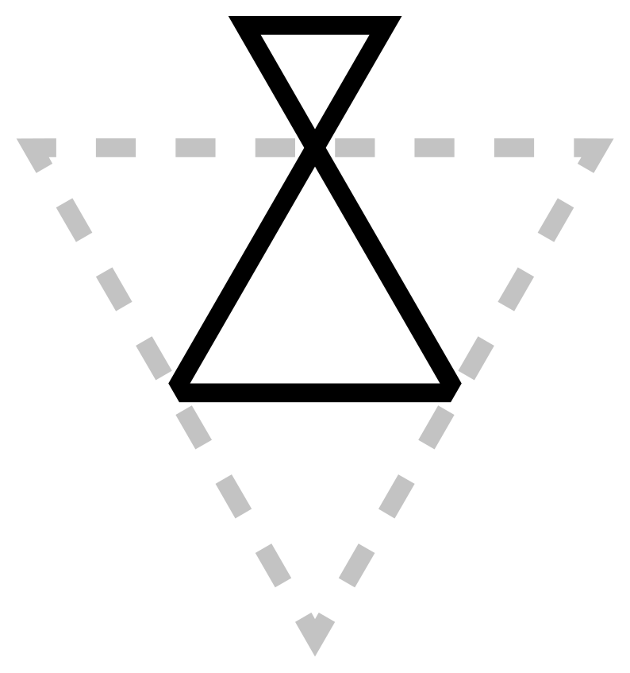 |
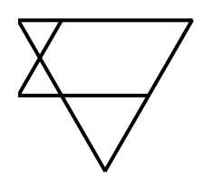 NGU: xa"> |
|||||||||||||||
| Nasal |
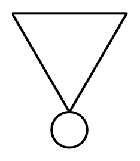 NGU: maSOT: ma TSO: ma VEN: ma"> |
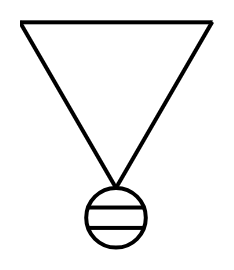 VEN ṋa"> |
SOT: na TSO: na VEN: na"> |
SOT: nya TSO: nya VEN: nya"> |
SOT: nga TSO: nga VEN: nga"> |
|||||||||||||||
| Syllabic Nasal |
|
|
|
|||||||||||||||||
| Syllabic Approximants & Trills |
|
|
||||||||||||||||||